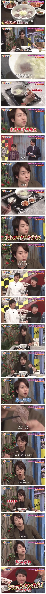

설렁탕 + 깍두기 조합 먹어본 일본 연예인.jpg
댓글
원래 설렁탕 맛집은 깍두기 맛집이다
살짝 사이다넣어서 시원새콤달달톡쏘는 맛이 좋더라 난
밥 말아서 먹으라고 ㅅㅂ
난 밥은 나중에 마는걸 좋아함 밥을 말기전의 깔끔한 국물도 즐기고 밥을 말고 난 후의 탁한 국물도 즐기고
사실 석박지지만 이런건 아무렴 어때겠지...
섞박지. 그리고 섞박지는 깍두기 하위분류같은거라 (원류는 무와배추를 섞어만든김치) 상관없긴해
예능 특성상 아마 다 식은거 갖다줬을테니깐 깍두기가 더 맛있을법해 ㅋㅋㅋ
옛날에 어떤 일본예능은 누구였더라 쟈니스계열이었는데
자기는 솔직히 삼계탕이 맛있는지 잘모르겠다라고
하는데 솔직했었음 ㅋㅋㅋㅋㅋ 애초에 마른몸을 유지하느라
먹는것을 싫어하는 캐릭터긴했음
니시키도 료?
설렁탕 맛있는건 기본이고 깍두기로 승부해야한다
히히 깍두기 좋아
설렁탕이야 사실 다 그게 그거라서 석박지가 핵심이긴하지
깔끔한 뽀얀국물 너무조아
일본인들은 기본적으로 나트륨에 대해 면역이 있나봄
설렁탕에 저리 당면 넣어야지
소면 넣는 집들 ㅈ같다
그래? 난 소면이 좋던데
뭔 소리고 흰국물엔 흰면이지
? 갈비탕이 당면이고 설농탕은 소면이 정배아님?
임마 이거 물줄 모르네 설렁탕 잘못배웟네
혼분식 장려운동 하면서 소면 들어간거라 소면이 맞음
설렁탕엔 소면이지;
갈비탕도아니고 그게 머선말이고
누가 슬릉탕에 당면을 츠 말아묵노? 니 당나라 사람이가?
소면이지; 당면은 갈비탕이고
당면 들어간 설렁탕을 본적이 있던가...
솔직히 깍두기보다 잘~익은 섞박지랑 먹으면 진짜 죽여주는데
설렁탕이 거기서 거기지...! 결국 깍두기에게 패배하니 말이지...!
깍두기도 잘된거 줬네
그 설렁탕에 깍두기넣고 구운김 띄워먹는 일드인 줄
너무달면안됨
하 영동설렁탕 특유의 꼬릿한 그 맛이 그립다...내일 갈까
사실 설렁탕의 본체는 깍두기임 제대로 먹는게 맞음 ㅇㅇ;;
석박지 깍두기 요런게 본체임 ㅋㅋㅋㅋ
뜨끈한 설렁탕 먹고 싶다
깍뚜기 씹는소리 들리면 아주그냥 죽여버린다
슥빡지
근데 저런 국밥집은 깍두기가 맛있는게 팩트임;;;
사쿠라이 깍두기쳐도 유튜부에 영상이없네
사실 설렁탕은 슥박지 깎뚜기가 메인이그든요
쟤네 치킨무도 좋아한다고 그러지않았나
아 ㅅㅂ 설렁탕 존나땡기네
확실히 배추김치보다 깍두기가 맛있음
어우 맛있겠다
사카린(뉴슈가)로 단맛을 내는 잘익은 섞박지에 국밥이면 떽뚜지!!
아니 댓글들 미쳤냐??
설렁탕에는 소면이지 갈비탕이 당면이고
설렁탕에 당면은 어디 지역임??
개인적으로 인천에서 해장국집은 평양옥.해장국집.삼강옥.삼화정임
설렁탕 일본에서 비싸게 팔릴수 있을까
한국도 13000은 하는데
일본에서 고기 저것만 들어있으면 안찾을지도..
고급화를 하든가
제삿밥이냐 밥은 왼쪽이다 일본인!
원래 설렁탕은 깍두기를 먹기위한 발판인걸 모르냐
ㅋㅋㅋ자막이 졸라웃기네
설렁탕을 무라카이 깍뚜기얘기만 하고앉앗노